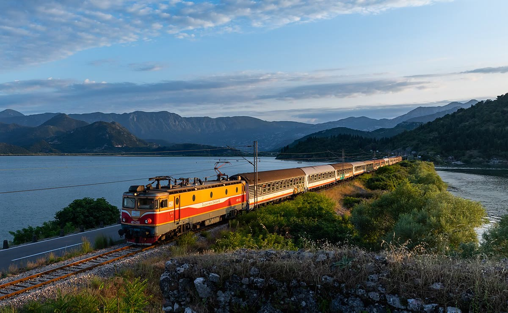

Internacional · 25 de outubro
Trens noturnos voltam a ligar cinco capitais europeias
Rotas noturnas reduzem viagens curtas de avião; procura por leitos cresce 27% no primeiro mês.

Cinco capitais europeias voltaram a ser ligadas por trens noturnos nesta semana. As novas rotas partem de Paris, Berlim, Viena, Roma e Madri e chegam a destinos como Copenhague, Varsóvia e Porto. A operadora fala em 27% mais procura por leitos no primeiro mês.
Cada composição tem vagões-leito, poltronas reclináveis e um vagão-bar. Os bilhetes começam em 49 euros para poltrona e 129 euros para cabine compartilhada. As viagens duram entre 9 e 14 horas, com uma parada técnica para troca de maquinista.
Alternativa ao avião
O retorno dos trens noturnos é apresentado como alternativa para trechos de até 1.200 quilômetros. Um estudo da associação europeia de ferrovias estima que cada passageiro que troca o avião pelo trem evita, em média, 80 quilos de CO₂ por viagem. A operadora promete usar energia renovável em 70% do percurso até 2028.
A procura surpreendeu. Em duas semanas, 68% dos leitos de outubro e novembro já estavam reservados. “As pessoas querem viajar dormindo, chegar no centro da cidade e não perder um dia inteiro em aeroporto”, disse a porta-voz Ingrid Bauer.
Desafios antigos
A expansão, no entanto, esbarra em problemas conhecidos: frota envelhecida, regras diferentes em cada país e estações sem estrutura para passageiros noturnos. Em Roma, o embarque acontece em uma plataforma sem sala de espera aquecida. Em Viena, a operadora improvisou um café da manhã em um vagão antigo.
Especialistas apontam que o modelo só se sustenta com tarifas competitivas e ocupação alta. “O trem noturno é eficiente, mas tem custo operacional maior que o diurno. Não dá para tratar como aventura”, disse o consultor ferroviário Hans Meier.
A operadora planeja novas rotas para 2027, incluindo Lisboa–Madri e Budapeste–Bucareste. Até lá, vai testar cabines individuais e um sistema de reserva de jantar no vagão-restaurante.